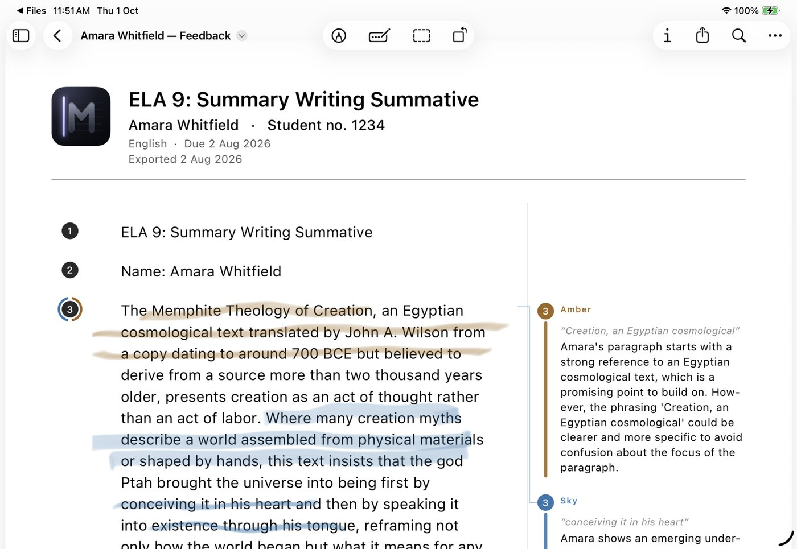
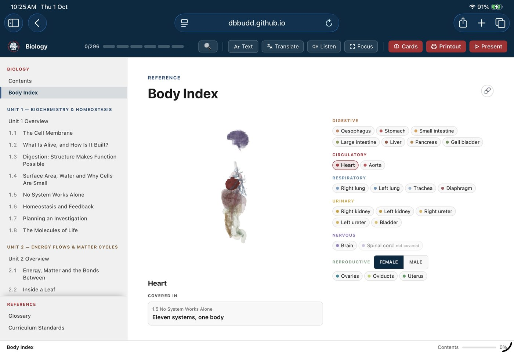

Bring a Barrier,
Leave With a Build
Teachers Teach Teachers · 2 October 2026
Teachers Teach Teachers
Every hard problem in your classroom is one that nobody has built a tool for, because nobody else knows it the way you do. Today you name one, turn it into a barrier you can design around, and build a first version of a tool that removes it. Twice, in two AI tools. No coding needed.
Your session’s tools
Open Shortcuts and the Claude app before we start, and sign in to Claude.
Sign into both before we start.
What your device needs
- Device A Mac or iPad with an M1 chip or later, an iPad mini with an A17 Pro chip, or an iPhone 15 Pro or later.
- Software macOS 27, iPadOS 27 or iOS 27, to describe a shortcut.
- Apple Intelligence Turned on. The device language and the Siri language must be the same supported language.
- Free space Up to 14 GB, for Apple Intelligence.
- Connection The internet, to describe a shortcut.
- For Round 2 The Claude app, on a Mac, with a paid Claude plan. Claude Code is in its Code tab.
You leave with
- A first version of a tool for one real barrier in your classroom. It won’t be finished. That’s the point.
- A loop you can run again on your own: Barrier, Sketch, Prompt, Build, Test.
- A Technology Coach to keep working with.
The idea
Recursion
Good tools are rarely right the first time. They take shape by going round again: make a version, watch what it does with the people it is for, and build the next one from there. The session opens on one word for this, recursion, and shows it at work in nature and in AI before you run it yourself.
No one drew this fern by hand. A computer applied four simple rules for moving a dot, 200,000 times, each time to the dot it had just made.
The same rule, applied to its own output.
-
A coastline.
The same jagged shape, at every scale.
-
A pair of lungs.
An airway splits in two, again and again. About 23 rounds turn one windpipe into millions of tiny airways.
-
A brain cell.
Branches on branches, connecting with thousands of other cells.
-
Now, AI.
It makes a guess, measures how far off it was, adjusts its connections a little and goes round again, millions of times.
Going round again doesn’t guarantee better. It makes things fit.
A fern
regrows its fronds every year and turns them toward the light.
Plants and animals
adapt over many generations to the places they live, and keep changing when those places change.
An AI model
adapts to whatever it is scored on.
Your tool
adapts to whatever you test it with. That is why the loop ends in Test: today with a colleague, on Monday with the students it is for.
If the machine recurses on knowledge, the value isn’t in knowing.
What stays scarce is judgment, which decides what you test against: knowing which problem matters, and what a good answer looks like when you see one.
Why now
AI and education: A watershed moment for MIT
- AI-aware education
- People and community
- Continuous reflection
“not an optional exercise”
In August 2026, MIT’s president wrote to the whole university to introduce the final report of its committee on AI in teaching and learning. The three points are the report’s three areas of recommendation. The quoted line is the committee’s own, which she repeats in her letter.
46%
use an LLM every day
90%
worry they’re becoming over-reliant
25%
think MIT is preparing them to use AI
The Tech survey of MIT undergraduates, fall 2025: 659 students, in Appendix C.3 of the committee’s report. The red card is the gap.
So we teach
- Thinking routines.
- Creativity.
This is why we start with reflection: to find the problems worth solving.
Algorithmic
A known procedure. Follow the steps, get the answer.
AI has eaten this one.
Heuristic
No procedure. Rules of thumb, judgment, trial. You know you’ve arrived when you look at it.
Every hard problem in your classroom is on the right.
The question
What problems
do you want
to solve?
After Homa Tavangar: the question is no longer what you know, but what problems you want to solve.
The loop
You go round it twice today.
First in Flint, then in Gemini. The ring is closed on purpose: what you learn in Test becomes the next barrier.
First in Shortcuts, then in Claude Code. The ring is closed on purpose: what you learn in Test becomes the next barrier.
The session in nine steps
1. Warm-up
Round 1
45 seconds each
- Write the most ridiculous word you can think of.
- Stand up. Find someone you don’t work with.
- Pitch a product with that name.
Round 2
45 seconds each
- Now write your real classroom problem. One sentence.
- New partner.
- Pitch each other a solution.
Keep it
Your real classroom problem, in one sentence. Every step that follows uses it.
Adapted from Creative Hustle by Olatunde Sobomehin and Sam Seidel.
2. Barrier, not deficit
Deficit
They can’t organise their writing.
Barrier
The organising has to happen in their head at the same time as the writing.
Same student. Different problem. Only one of them is yours to fix.
Your turn
blank can’t blank
The blank has to happen at the same time as blank.
A deficit sentence points at the student. A barrier sentence points at the task, and a task is something a tool can change.
3. Sketch it
90 seconds.
Boxes and arrows.
- What does the student see first?
- What can they do on it?
- What happens when they tap?
A rough sketch is fine: it is a thinking tool, not a design. Each answer fills a blank in the prompt spine. If you can’t answer one of the three, that is the useful thing to find out now.
4. The prompt spine
Build a single-screen tool for a Grade blank student who blank. Show blank first, then let them blank. Keep the language at blank. No sign-in.
- Grade blank student who blank Who it is for, and the barrier, in your barrier sentence’s words.
- Show blank first The first thing on the screen, from your sketch.
- then let them blank The one action, from your sketch.
- Keep the language at blank The reading level. Often a grade or two below the class.
- No sign-in. A guardrail: students open it and use it, with no account and no personal data.
Build a single-screen tool for a Grade 7 student who loses their place in a multi-step maths problem. Show the current step first, then let them tick it off. Keep the language at Grade 5. No sign-in.
5. Build 01
Build 01 Flint
Build 01 Shortcuts
- One drives. One talks.
- Your v1 will be wrong. That’s the point.
7 minutes
Help for this step
The Flint guide walks you through it.
Help for this step
Describe it, and Shortcuts builds it. Then make it yours.
6. Test 01
Test 01 Flint
Test 01 Shortcuts
- Swap devices. They use it cold.
- You say nothing.
- Watch where they hesitate.
3 minutes
Each place they hesitate is your next barrier. That is why the loop is a circle.
Help for this step
Try it as a student, then share it with your class.
Help for this step
Try it yourself first, then share it with a colleague.
7. What it couldn’t do
With your partner: what did you want it to do that it wouldn’t?
Say it out loud. The room’s answers go up on the board.
8. Push it
- Substitute
- Combine
- Adapt
- Modify
- Put to another use
- Eliminate
- Reverse
- Substitute
- Combine
- Eliminate
- Mine works,
push it
Go to your corner. Change one thing.
SCAMPER is seven ways to change an idea. Today you use three. The fourth corner is for pairs whose tool already works.
Help for this step
Prompts and videos that push a Flint build further.
Help for this step
Change one thing by describing it, then check what changed.
9. Build 02
Can’t Flint
- Custom logic.
- Multi-step.
- Behaviour you design.
Can Gemini
- Custom logic.
- Multi-step.
- Behaviour you design.
Build 02 Gemini
Build 02 Claude Code
- Same barrier. More ambition.
Nobody finishes this. You’re finding out if it’s buildable.
Your prompt spine8 minutes
Help for this step
The Gemini guide walks you through it.
Help for this step
The Claude Code guide walks you through it.
Where this goes

Margins
“I built this because I saw how ELA teachers struggled with grading workflows.” Built by the presenter, for one real problem.

Biology
An open biology course reader, also built by the presenter. This website is built from its template.
The third rung
The tool stops being the limit.
You become the limit.
Go further
Guides for the next rung, and for putting what you build in front of students.
Publish it
- Barrier
- Sketch
- Prompt
- Build
- Test
You just ran this twice. Run it again Monday.